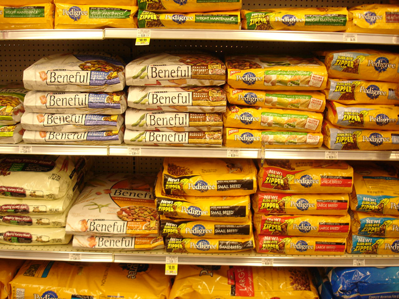
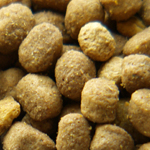
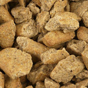
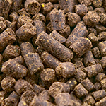
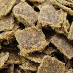

Dry dog foods might all look pretty similar but what you might not realise is that the methods used to produce them can vary dramatically and that the way a food is processed can have huge consequences for the nutrients contained within. In this article, I'll be looking into the various methods manufacturers use to make dry dog foods and their potential consequences for your dog.
The cost of convenience
Over the last few decades, one factor has shaped the pet food industry more than any other: convenience. These days, many of us struggle to find the time to prepare a nutritious, balanced diet for ourselves, let alone our dogs, so it's no surprise that the demand for complete dog foods has increased by 90% in the last 10 years. And amongst complete foods, dry completes - the most convenient options of all, have come to completely dominate the pet food market from top to bottom. Their draw is obvious: they provide everything your dog needs in a single bag, they are easy to store and (usually) relatively inexpensive. But does all this convenience come at a price?
Virtually all dry foods are made by grinding and mixing the raw ingredients into a dough which is then cooked and separated into the individual biscuits. Nutritionally, the process has some advantages: The grinding and cooking, for example, certainly make carbohydrates easier to digest whilst also destroying any pathogens and parasites that might be present in the raw ingredients. Unfortunately though, the very same processes can also have some detrimental effects on the food:
Vitamins
Vitamins are delicate things. From the moment an ingredient is harvested, its natural vitamin levels start to drop. Over time, the vitamins continue to gradually degrade but certain factors can considerably speed things up. High temperature, for example, can destroy vitamins very quickly. Unfortunately, as you might imagine, the cooking and drying of dry dog foods often involves VERY high temperatures. As a countermeasure, virtually every complete food has it's vitamin levels topped up with a synthetic multi-vitamin but most synthetic vitamins are generally regarded as poor substitutes for the real thing.
Proteins
High temperatures can also dramatically effect the structure of proteins, forcing the amino acid chains to bend and twist into new forms. This is called 'denaturation' and it's effects on the nutritional quality of a food is unclear. Studies conducted on vegetable proteins in dog food suggest that cooking at temperatures high enough to cause the proteins to denature might actually make them easier for dogs to digest. Whilst the effects of similar temperatures on the digestibility of meat proteins haven't been studied in the same way, some nutritionists claim that the structural changes could make them harder for dogs to digest and more likely to lead to intolerance which would explain why some dogs react to a particular meat when it is in a dry food but are fine when fed the same meat raw. The enzymes naturally present in raw foods are regarded by many as extremely important factors in a dog's diet but since they are made of protein, they are completely destroyed during denaturation.
Omega 3 & 6 oils
At high temperatures, omega 3 and 6 oils, both of which are essential to keeping your dog healthy, can be lost. Unlike vitamins, most manufacturers don't replace lost essential oils after cooking.
But don't worry!
Not all dry foods are bad - far from it in fact! If enough care has been taken during manufacturing, dry foods can be nutritionally excellent. Different types of foods are made in very different ways so the best place to start is with the type of food you're feeding...
Types of dry dog foods
Although most dry foods look pretty similar, the methods used to make them and the ramifications for their nutrients can be quite different...
1. Extruded foods
Examples: Bakers Complete, Pedigree Complete, James Wellbeloved dry, Royal Canin dry, Burns, Orijen and many, many more.
The vast majority (around 95%) of dry dog foods are made by a process called extrusion. Extrusion is popular with manufacturers because it is inexpensive, quick and flexible, allowing for virtually any combinations of ingredients.
The extrusion process starts with the ingredients being mixed together and ground into a dough. The dough is then pushed through the inside of the 'extruder' (essentially a long metal tube) where it is continually mixed while being heated under pressure to temperatures of up to and sometimes even over 150°C. At the end of the extruder, the dough is pushed through a 'die' (a lot like the Play-Dough factory for the parents amongst you!) which gives the biscuits their shape. As it leaves the pressure of the extruder through the die, the cooked dough expands quickly while it is continually sliced by a rotating knife to form the individual pieces. Extrusion is a very fast process, often only taking about 5 minutes to get to this point. The final stage is to dry off the pieces and make them crispy by whisking them through a dryer for up to 20 minutes at temperatures sometimes as high as 200°C.
It is the high temperatures involved in extrusion that make it contentious, especially amongst raw feeding advocates but those temperatures can vary considerably from one manufacturer to another. Some manufacturers (like Champion Pet Foods who make Orijen and Acana) have found ways to extrude at much lower temperatures (typically around 90°C) which should leave much more of the natural nutrients intact.
Another source for concern with extruded foods is the fact that, when submerged in water, they tend to float and absorb the moisture in such a way that they expand to many times their original size before beginning to break up. This has led many nutritionists to question their suitability for breeds that are prone to gastric torsion (bloat).
2. Baked foods
Examples: Laughing dog.
Due to the controversy surrounding extrusion, alternative cooking methods have started to gain ground. Baking allows the biscuits to be cooked much more slowly at lower temperatures and pressures than extrusion thus causing less damage to the food's natural nutrients. Unfortunately, wheat gluten has always been an essential component in baked foods and since a lot of dogs have considerable problems with wheat, baking has never really taken off. The exception is Fold Hill who have found a way to bake dog food without using wheat which makes their Laughing Dog range quite unique.
3. Cold pressed foods
Examples: Markus Mühle, Lukullus, Gentle, Guru, Lupo.
Cold pressing methods can vary between manufacturers but most are made by first drying all of the ingredients, pre-cooking the meat ingredients (to ensure there is no bacteria) and thermally pre-treating the carbohydrates (to make them more digestible). The combined dried mixture is then mixed with oils (usually cold pressed) before being pressed in a die for a few seconds to form a small bite of food. The second stage of processing involves the quick application of heat (usually just a few seconds at 45-70°C) to create the final biscuit. Because the temperatures used during cold-pressing are much lower than those used in extrusion and baking and because the heat is only applied for a few seconds, cold pressed foods should retain more of their natural nutrients than other dry biscuit foods.
4. Air-dried / freeze-dried foods
Examples: Ziwi Peak, K9 Natural.
Air-dried and freeze-dried foods offer a convenient option for those natural-feeding advocates that believe that any form of cooking is inappropriate for dogs. Air-drying and freeze-drying both involve the removal of moisture from the food, the first by passing a continuous stream of warm, dry air over the food, the second by freezing the food and then reducing the surrounding pressure which causes the frozen water in the food to turn directly into steam and exit the food. By reducing the moisture level so that it is too low to support bacterial life and then sealing the food in airtight packaging, raw foods can be preserved for long stretches of time without any cooking or any preservatives. The total lack of cooking also ensures that the the food's natural nutrients remain largely unaltered right into the dog's bowl.
Unfortunately, air-dried and freeze-dried foods are much more expensive to produce than typical dog foods and their high prices have so far prevented them from breaking through to the UK mainstream.
Conclusion
From a nutritional standpoint, the manufacture of dry foods can have significant pros and cons for the dog but the scale of the cons depends entirely on the production method used. In the worst case scenario, the food could leave the factory with almost no natural vitamins or essential oils at all and may contain proteins that are more likely to lead to dietary intolerance. To avoid these problems, try to stick with foods that haven't been subjected to harsh temperatures like cold pressed, air-dired, freeze-dried or (wheat free) baked foods or higher end extruded foods. If you're in any doubt at all, get in touch with your manufacturer directly and ask them what measures they have taken to limit the detrimental effects of the cooking process. Whatever you find out, please let us know below...